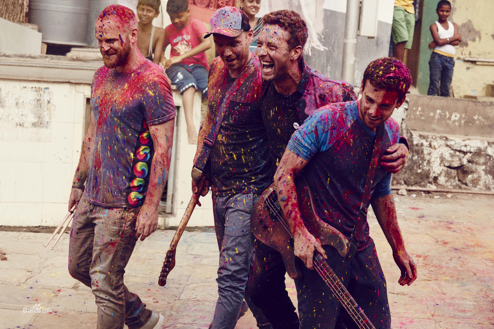
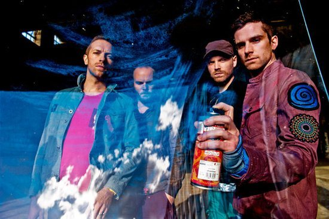
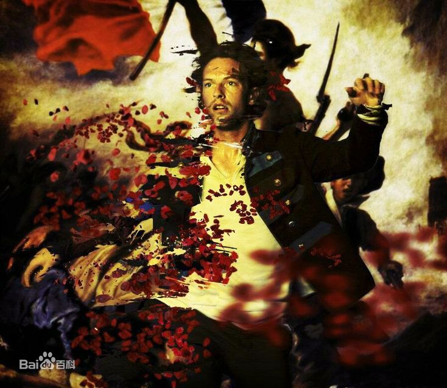

COLDPLAY
乐队简介
Sucre 2020/2/2
酷玩乐队（Coldplay），英国摇滚乐队，1996年成立于伦敦，由主唱克里斯·马汀、贝斯手盖伊·贝瑞曼、吉他手强尼·邦蓝以及鼓手威尔·查平组成。创意总监及前经纪人菲尔·哈维通常被视作乐队的第五个成员。(详情点击浏览百度百科)
 Coldplay是英国摇滚乐坛进入新世纪之后崛起的最受欢迎的摇滚乐队zhi之一，他们秉承了英式摇滚乐队一贯的Britpop/Rock and roll/Alternative Rock英伦风格，成为了英国新一代乐队中的杰出代表。Coldplay有四个成员，乐队最早成形于伦敦大学学院 (UCL)时期。团员包括Chris Martin（键盘和声乐）、Jonny buckland（吉他和声乐）、Guy Berryman（贝斯和声乐）及Will Champion（鼓和声乐）。Coldplay乐队成军之后的每一张专辑都不断进步，一步一步地扩大他们的影响，并勇夺格莱美等多项大奖。2014年12月6日，酷玩乐队的《Ghost Stories》获得第57届格莱美流行演唱专辑奖提名。
Chris Martin
主唱简介
Sucre 2020/2/2
克里斯多弗·安东尼·约翰·马汀（Christopher Anthony John Martin），1977年3月2日出生于英格兰德文郡埃克塞特，酷玩乐队（Coldplay）主唱、吉他手与钢琴手。
他的音域介于中音和高音之间，并且经常使用假声（falsetto）。他在英格兰多塞特郡的Sherborne School接受教育，那是一所知名的男子私立学校。之后他在伦敦大学学院（UCL）取得古代文字研究的第一级学位。马汀在2003年12月5日与格温妮斯·帕特洛结婚。他们的女儿爱波·布莉丝·爱丽森·马汀在2004年5月14日出生于伦敦。他们的第二个小孩摩西·布鲁斯·安索尼·马汀则在2006年的4月8日出生于美国纽约市。克里斯·马汀以个人的身分为不同的歌手撰写了许多歌曲，包括 Embrace乐团的“Gravity”和洁米莉雅（Jamelia）的“See It In a Boy's Eyes”等。他也与朗·赛克斯（Ron Sexsmith）、Faultline、街头小子（The Streets）和伊安·马克库罗（Ian McCulloch）等人合作。
专辑
音乐单曲
| 歌曲名称 | 发行时间 | 歌曲简介 |
|---|---|---|
| Brothers & Sisters | 1999-04-26 | 第一支单曲 |
| Lhuna | 2008-12-01 | 公益单曲 |
| A Message 2010 | 2010-01-23 | 海地赈灾义演曲目 |
| Christmas Light | 2010-12-01 | 圣诞单曲 |
| Atlas | 2013-09-06 | 电影《饥饿游戏2:星火燎原》主题曲 |
| Wish I Was Here | 2014-07-15 | 电影《心在彼处》主题曲 |
| Miracles | 2014-12-15 | 电影《坚不可摧》主题曲 |
| Something Just like This | 2017-02-22 | & 烟鬼组合 |
| We All Fall in Love Sometimes | 2018-04-06 | 翻唱歌曲,原唱艾尔顿·约翰 |
| E-Lo | 2018-11-28 | 以“Los Unidades”的名字 |